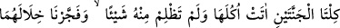
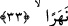

göstermesi ve daha sonraki sözleri bizim iddiâmızı doğrular mahiyettedir. Çünkü bu
beraberlik/arkadaşlık kardeş olmalarına ters düşmez. Çünkü kardeşlik ve arkadaşlığın
her ikisi de özel vasıflardır.
Derler ki: Bu iki kardeşten biri mü’mindi ve adı Yehûda idi. Diğeri kâfirdi ve adı
Kutrus’tu. Onlara babalarından 8.000 dinar miras kaldı ve onu aralarında paylaştılar.
Kâfir olan, hissesine düşen miktarın bin dinarı ile bir arazi satın aldı. Bin dinarı ile
bir mâlikâne yaptırdı. Bin dinarı ile evlendi. Kalan bin dinarı ile de hizmetçiler tuttu ve
çeşitli eşyalar aldı.
Mü’min olan: “Allah’ım, kardeşim bin dinara bir arazi satın aldı. Ben de bin dinara
senden cennette bir yer almak isterim.” dedi ve bu niyetle bin dinarı tasadduk etti.
“Kardeşim bin dinara bir mâlikâne yaptırdı, ben de bu miktarı senin yolunda sarf ederek
cennette bir köşk sâhibi olmak isterim” dedi ve onu da tasadduk etti. “Allahım!
Kardeşim bin dinara bir kadınla evlendi. Ben de cennette hûrilere nâil olmayı ümid
ederek bu miktarı tasadduk ediyorum” dedi ve bin dinarı da fakirlere dağıttı. Sonra:
“Allah’ım, kardeşim bin dinara kıymetli eşyalar satın aldı ve hizmetçiler tuttu. Ben de
bununla senden “cennet ehlinin etrafında saçılmış inciler gibi dolaşan ölümsüz
gençler” (bk. el-İnsan, 76/19) satın almak isterim” dedi ve onu da Allah yolunda sarf
etti.
Bir müddet sonra kendi hissesine düşen bütün mîrâsı Allah yolunda sarf eden mü’min
kardeş, muhtaç duruma düştü. Hâlini arz etmek gayesiyle kardeşinin geçeceği yol
üzerine oturdu ve onu beklemeye başladı. Kâfir olan, bütün ihtişâmıyla oradan
geçmekteydi. (Küçümseyerek) ona baktı ve: “Ne istiyorsun?” dedi. O da: “Şu anda
ihtiyaç içindeyim. Bana bir yardımın dokunur diye sana geldim” dedi. Kâfir kardeş:
“Seninle biz büyük bir serveti paylaştık, malını ne yaptın?” dedi. Bunun üzerine mü’min
kardeş, kendi hissesine isâbet eden malı nasıl tasadduk ettiğini anlattı. Kâfir olan:
“Anlaşılan sen bütün servetini fakirlere dağıtmışsın. Git, sana asla bir şey vermem”
diyerek onu yanından kovdu. Malının hepsini tasadduk ettiği için kardeşini kınadı.
“Bunlardan birine” kâfir olana içinde türlü türlü üzümler olan “iki üzüm bağı
vermiş her ikisinin de etrafını” üzüm bahçelerinin etrafını da “hurmalarla donatmış,
aralarında da” bu iki bahçenin ortasında bahçelerden her biri gıdaları ve meyveleri
içinde bulundursun, güzel şekilde ve en zarif tertipte devamlı mâmûr olsun diye
“ekinler bitirmiştik.”
33. İki bağın ikisi de yemişlerini vermiş, hiçbirini eksik bırakmamıştı. İkisinin
arasından bir de ırmak fışkırtmıştık.